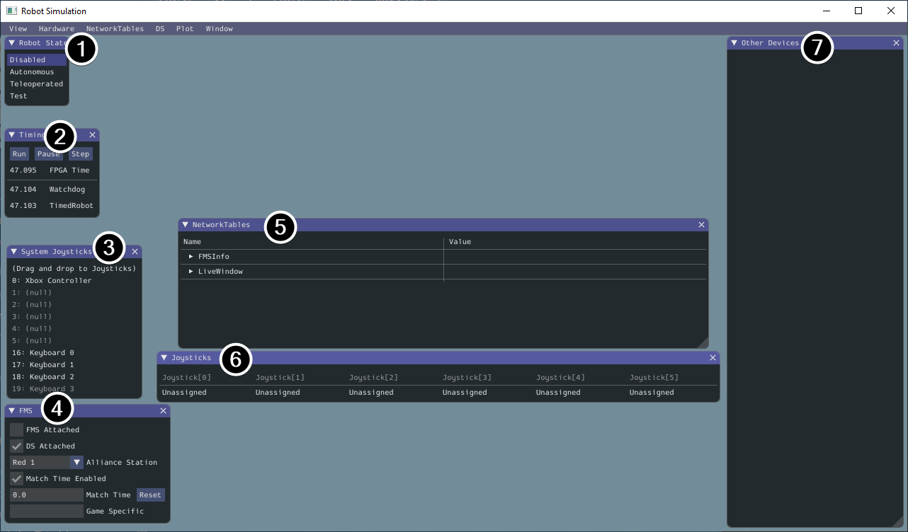
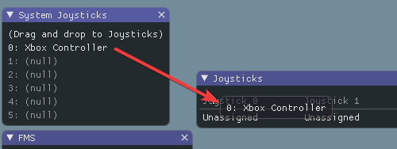
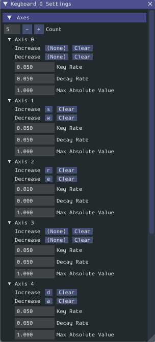

0. Setup#
Why it matters#
Learn Java first
Before the robot lessons, complete an interactive Java course. See Lesson 3: Java Reference for which course and which topics.
You can't learn to drive without a car. Before writing robot code, you need a working development environment, and the good news is it can simulate a robot on your laptop. You don't need a robot, a roboRIO, or even a controller to do most of this course.
By the end of this lesson you'll have:
- WPILib's tools installed
- a robot project created from the official template
- that project running in the simulator
Read this#
Walkthrough#
What you're installing, and why#
The WPILib installer bundles everything an FRC programmer needs. It's worth knowing what each piece is, because you'll hear the names constantly:
| Piece | What it is | When you use it |
|---|---|---|
| WPILib VS Code | A copy of the VS Code editor with the WPILib extension built in | Writing, building, and deploying code |
| Java JDK | The Java compiler and runtime, the exact version WPILib expects | Every build. You never open it directly. |
| GradleRIO | The build tool that compiles your code and sends it to the robot | Every build and deploy |
| Simulation GUI | A window that fakes the Driver Station and robot hardware | Testing code without a robot |
| Glass, AdvantageScope, SysId, DataLogTool, and more | Dashboards and analysis tools | Debugging, tuning, and later lessons |
Why a separate VS Code?
WPILib's copy is pinned to versions that are tested together. If you already use VS Code for other things, keep both. Open the one with the WPILib logo for robot code.
Step 1: Install WPILib#
- Go to the WPILib releases page and download the installer for this season for your operating system. The installation guide above has direct links.
- Run it. On Windows, the file is an
.iso: double-click to mount it, then runWPILibInstaller.exe. - Choose Everything and Install for this user.
- When it asks about VS Code, choose Download for this computer only.
- Wait. It's a large download (a few gigabytes).
Use the same season version as the team
WPILib releases a new version every January. A project made with one year's tools won't build with another year's without upgrading. Ask a returning programmer which version the team's robot code uses.
Step 2: Install Git#
Download and install Git from git-scm.com. The default options are fine. You'll use it in Lesson 1.
Step 3: Create your first project#
- Open WPILib VS Code (look for the WPILib logo).
- Press Ctrl+Shift+P to open the command palette. You'll use this constantly. It's how you run every WPILib action.
- Type
WPILib: Create a new projectand press Enter. - Fill in the form:
- Project type: Template
- Language: Java
- Project base: Command Robot
- Base folder: somewhere you'll find again, like a
roboticsfolder in Documents - Project name:
my-first-robot - Team number: 4674
- Click Generate Project, then choose to open it in the current window.

The New Project Creator, filled in. From the WPILib docs, Creating a Robot Program (CC BY 4.0).
Mac and Linux
Use Cmd+Shift+P on Mac. Everything else is the same.
Step 4: Look around the project#
Expand the folders on the left. You don't need to understand all of this yet, but know where things are:
my-first-robot/
├── build.gradle ← build settings (rarely edited)
├── gradlew, gradlew.bat ← the build tool launcher (Lesson 2)
├── vendordeps/ ← vendor libraries like CTRE and REV
└── src/main/java/frc/robot/
├── Main.java ← starts the program. Never edit.
├── Robot.java ← the robot's main loop (Lesson 6)
├── RobotContainer.java ← creates subsystems, binds buttons (Lesson 7)
├── Constants.java ← numbers like ports and gear ratios (Lesson 8)
├── commands/ ← command classes
└── subsystems/ ← subsystem classes
Step 5: Run it in simulation#
- Press Ctrl+Shift+P and run WPILib: Simulate Robot Code.
- The first build takes a minute or two while Gradle downloads what it needs. Later builds are much faster.
- When asked, check Sim GUI and click OK.
- A window opens. In the Robot State box, click Teleoperated.
That's it. Your robot code is running, just on fake hardware.
A tour of the Sim GUI#

The Sim GUI, with each panel numbered. From the WPILib docs, Simulation Specific User Interface Elements (CC BY 4.0).
- Robot State: the robot's current mode. Click a label to change modes, just like the real Driver Station.
- Timing: the robot's timers. You can pause and step time here.
- System Joysticks: the controllers and keyboards your computer can see.
- FMS: pretends to be the competition field system.
- NetworkTables: the values your code publishes to the dashboard.
- Joysticks: the joysticks your robot code actually reads. Drag a device here from System Joysticks.
- Other Devices: devices that don't fit the other panels, like some gyros.
More panels, like PWM outputs and DIO, can be opened from the Hardware menu.
Using a controller or the keyboard#
Drag a controller (or Keyboard 0) from System Joysticks into slot 0 of Joysticks. Your code's CommandXboxController(0) reads whatever is in slot 0.

Drag a device from System Joysticks into a Joysticks slot. From the WPILib docs, Simulation Specific User Interface Elements (CC BY 4.0).
No controller? Use the keyboard
Drag Keyboard 0 into slot 0. To choose which keys control which axis, open DS → Keyboard 0 Settings in the Sim GUI's menu bar. The WPILib docs show a setup that makes the keyboard act like an Xbox controller's two sticks (axes 1 and 4):

Keyboard settings that act like an Xbox controller. From the WPILib docs, Simulation Specific User Interface Elements (CC BY 4.0).
When it doesn't work#
| Problem | Fix |
|---|---|
| Command palette doesn't show WPILib commands | You opened regular VS Code, or the folder isn't a WPILib project. Open the WPILib VS Code and File → Open Folder the project. |
| Build fails on the first run with a download error | You're offline or behind a school firewall. Try another network. |
| "Unsupported class file version" or a JDK error | The project and the installed WPILib are different seasons. Reinstall the matching year. |
| Sim GUI never appears | Check the terminal panel at the bottom of VS Code for the first red error line. |
Try it#
- Install WPILib and Git
- Create
my-first-robotfrom the Command Robot template - Run it in simulation and switch to Teleoperated
- Drag a keyboard or controller into Joystick 0
- Take a screenshot and post it in the team channel
Next: real hardware
Once simulation works, do Lab 0 to install the rest of the tools and deploy a project to the test bed.
Check yourself#
Where is Robot.java in your project?
src/main/java/frc/robot/Robot.java
What's the difference between Simulate Robot Code and Deploy Robot Code?
Simulate builds your code and runs it on your laptop with fake hardware. Deploy builds it and copies it to the roboRIO on a real robot, where it controls real motors.
What's the command palette, and how do you open it?
It's VS Code's search box for actions. Open it with Ctrl+Shift+P (Cmd+Shift+P on Mac). Every WPILib action starts there.
Why does everyone on the team need the same WPILib version?
Each season's tools only build projects made for that season. Different versions mean the code won't build on someone's laptop.